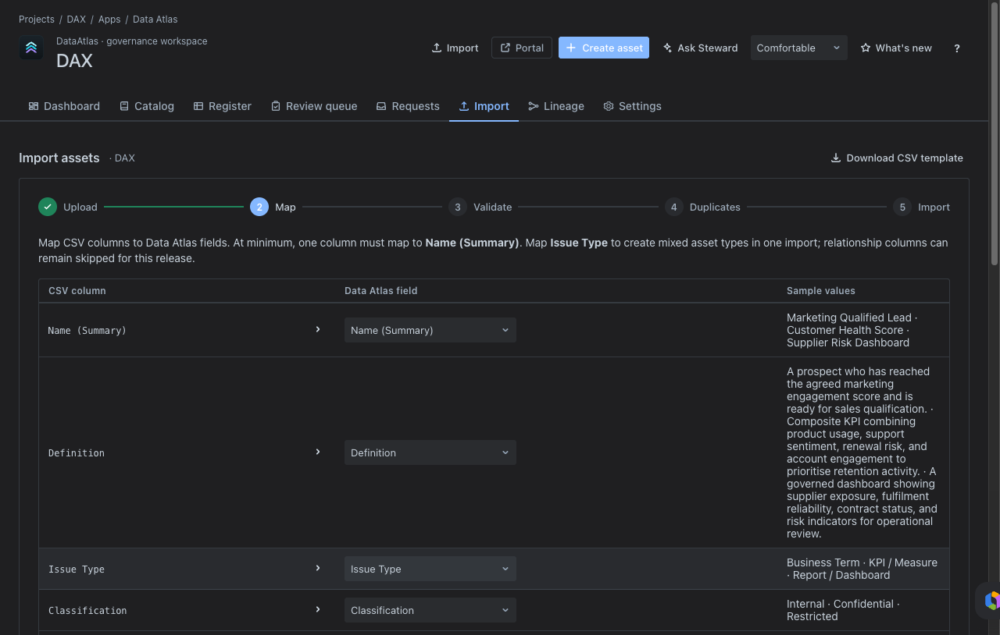

Admin Guide
Setting up, configuring, and operating a Data Atlas governance workspace in Jira or Jira Service Management.
01Deployment Model
Data Atlas is deployed as a Forge app for Jira. It runs in a standard Jira project or a Jira Service Management project depending on whether intake portal functionality is required.
| Scenario | Recommended project type |
|---|---|
| Governance and catalogue management only | Standard Jira project |
| Governance plus branded intake portal | Jira Service Management project |
| Existing JSM portal already in use | Route Data Atlas request types into existing portal |
Recommended commercial setup:
- Use a dedicated Jira project as the governance workspace.
- Use a Jira Service Management portal for business intake where JSM is enabled.
- Route portal request types into the Data Atlas review and requests workflow.
- Keep business domains inside Data Atlas as metadata — not as separate Jira projects.
Tip: Using domains inside a single Data Atlas project is almost always preferable to creating separate Jira projects per business area. Saved views and filters provide the same separation with less overhead.
02App Setup Health
After installing Data Atlas in a project, confirm setup is complete before onboarding users:


JSM projects: Jira may create service project screens that do not initially expose Data Atlas governance fields. Always run setup health after installing in a fresh JSM project.
03Request Types
Configure these four request types in the Data Atlas service portal. Each type captures the context needed for steward triage.
Portal visibility: Request types created via the REST API are hidden until added to a portal group. After creating each type, go to Project settings → Portal → Portal groups and add each request type to the General group.
04Portal Configuration
Configure the portal name and introduction text so business users understand what to request and where.
| Setting | Value |
|---|---|
| Portal name | Data Atlas |
| Introduction text | Raise Data Atlas governance requests for new metrics, business terms, reports, dashboards, ownership changes, and data definition reviews. |

05Domains & Classifications
Use Settings → Domains to model business domains inside a Data Atlas project. This supports a single governance project for the organisation while still allowing assets to be grouped by business area.
Suggested domains to configure:
- Customer Experience
- Finance
- Operations
- Risk and Compliance
- People
- Sales
- Product
- Supply Chain
Use Settings → Classifications to define sensitivity labels. Suggested classification levels:
| Label | Use |
|---|---|
| Public | Assets with no sensitivity — safe for unrestricted access. |
| Internal | For internal business use — not for external sharing. |
| Confidential | Restricted to specific teams — access by approval. |
| Restricted | Highly sensitive — limited access, regulatory implications. |
06Access Control & Roles
Data Atlas uses server-side role-based access control. Roles are assigned per tenant and enforced in the backend — not in the client.
| Role | Type | Key permissions |
|---|---|---|
| Reader | Governance | Read assets and catalogue |
| Contributor | Governance | Read + write assets |
| Data Steward | Governance | Review, classify, and manage assets |
| Data Owner | Governance | Own and approve assets in their domain |
| Business Owner | Governance | Business sign-off on governed definitions |
| Technical Owner | Governance | Technical metadata accountability |
| Reviewer / Approver | Governance | Review and approve change requests |
| App Admin | Admin | All governance permissions + settings read |
| Governance Admin | Admin | Full access including audit log and settings write |
Least privilege: Assign Reader to business users who only need to browse the catalogue. Reserve Governance Admin for the team responsible for Data Atlas configuration and audit.
07Import & Export
The import template is the standard onboarding mechanism for initial catalogue loads. Use it to populate assets in bulk before opening Data Atlas to business users.
- Download the template from Import → Download CSV template.
- Populate required columns: issue type, name, definition, classification, domain, platform, owner fields, review date, technical name, data type, integration platform, calculation logic, frequency, and relationship columns.
- Upload, map, validate, resolve duplicates, and execute.
Key import behaviour to communicate to users:
- Update-only for changed records — existing records with matching keys are updated, not duplicated.
- Create-only for new records — rows without a matching key create new assets.
- No delete on absence — records absent from the import file are left untouched.
- Round-trip safe — exports preserve relationship columns and can be re-imported using the same template shape.


08Rovo Configuration
Data Atlas includes Rovo actions for stewardship assistance. Complete these steps to enable Rovo for the tenant:
- Verify the Rovo agent is enabled for the Atlassian site.
- Confirm Data Atlas action endpoints respond successfully from Settings.
- Add product-specific instructions to the Rovo agent so it understands Data Atlas assets, domains, requests, and stewardship workflows.
- Consider assigning a Rovo agent to the portal once the tenant supports Rovo service configuration.
Rovo can assist with discovery and summarisation, but steward approval and governance decisions remain human-controlled. Rovo should not be configured to automatically approve, classify, or assign ownership to assets.
09Known Limitations
The following limitations apply to the current release and should be communicated to stakeholders before go-live:
- Portal request forms — request type forms currently use JSM's default required fields. Richer request forms should be completed in JSM Forms or request type field configuration before final customer-facing screenshots or go-live.
- Admin session screenshots — screenshots captured in an authenticated admin session may expose admin-only Jira controls. Crop screenshots to the product area when preparing public marketing material.
- In-memory persistence — current data persistence is in-memory inside the backend service container. Data resets with process or app lifecycle. Confirm Forge storage behaviour for the production environment before customer onboarding.
- Rovo dependency — Ask Steward functionality requires Rovo to be enabled for the tenant and Data Atlas Forge action endpoints to be healthy.
Ready to deploy Data Atlas?
Find it on the Atlassian Marketplace and install into your Jira project.